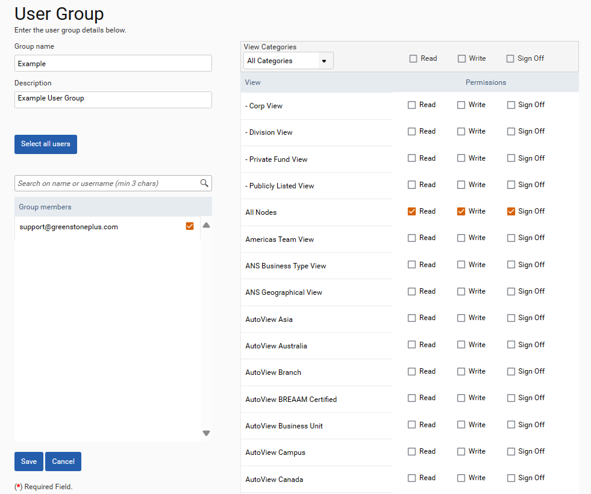

User Groups dictate the nodes and views the associated user(s) have access to. They also dictate if the associated users have read only access, write access or sign off access. To create a user group navigate to Admin Settings > Users > User Groups and select Add Group.
Give the group a name and description and search for the users who should be added to the group using the search function on the left side of the page. Group members must be ticked to ensure they are an active member of the user group.
The views the user has access to can be changed on the right side of the page. User groups with read access can view but not add or edit data. Users with write access can add or edit data and users with sign off access can approve data in the associated view.
